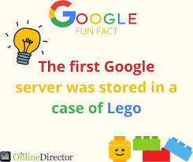

Google's mission is to organize the world's information and make it universally accessible and useful. What started in a California garage in 1998 has grown into a global leader in AI, search, and cloud computing.
Founded
September 4, 1998, by Larry Page and Sergey Brin at Stanford University.
The Name
Derived from "googol"—the mathematical term for a 1 followed by 100 zeros.
First Server
The very first Google server was famously built inside a case made of Lego bricks.
The Verb
In 2006, "Google" was officially added to the Oxford English Dictionary as a verb.
The Piece of History

The original storage system at Stanford University, housed in LEGO bricks.
← Back to Search